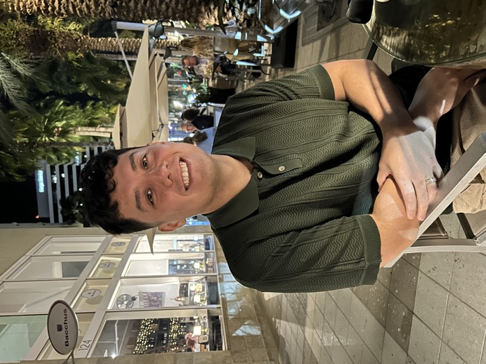

Currently a Senior Design Engineer at Lockheed Martin, Patrick leads the creation of immersive AR training experiences that change how aircraft maintenance is performed. His role is uniquely multi-faceted, combining technical development with client-facing leadership. Patrick serves as a subject matter expert for Tanit XR, navigating them through product capabilities, answering technical queries, and designing the primary digital site that hosts Tanit’s archive. Patrick holds a Master’s in Digital Arts & Sciences from the University of Florida and currently resides in the Tampa Bay Area with his wife and two dogs.
اضغط عرض ثلاثي الأبعاد على أي نموذج لاستكشافه هنا.